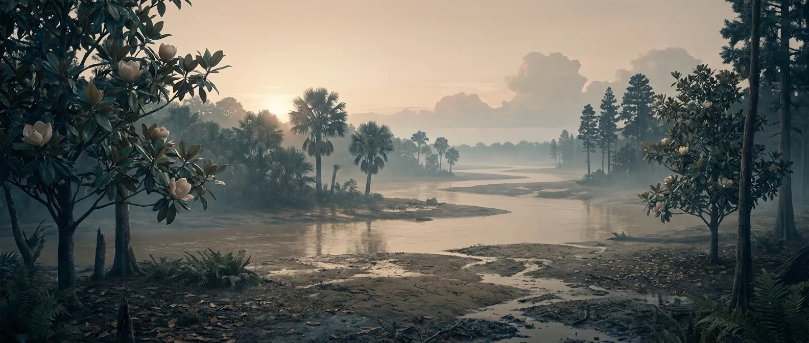
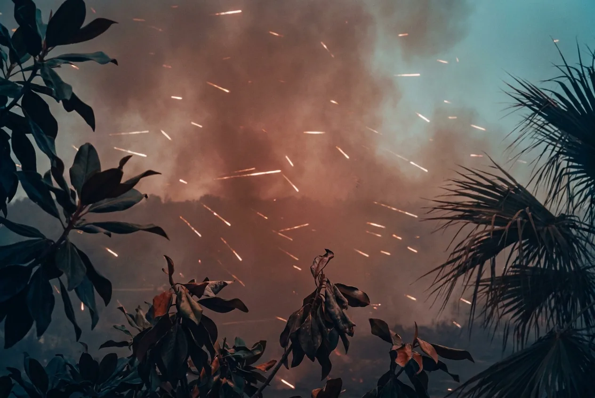
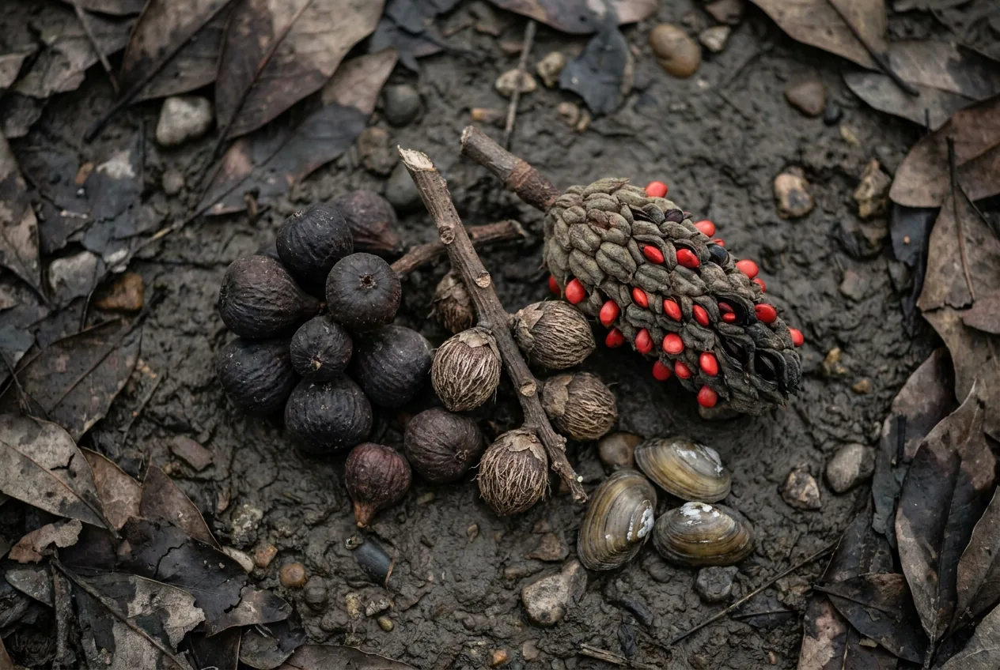

The interval where the plants finally start cooperating. Flowering plants spread from about 130 Ma, and with them arrive the first fruits, the first nectar and the first food on land a human can pick and eat knowing nothing about it. This is also peak dinosaur, despite the film. Tyrannosaurus, Triceratops and Velociraptor are all Cretaceous animals; the Jurassic had Stegosaurus and Brachiosaurus and far less variety. Everything else about the place is trying to be too hot.
Late Cretaceous, mid-latitude, near fresh water: genuinely liveable. Mid Cretaceous tropics at the 93 Ma thermal peak: weeks, because the wet-bulb temperature approaches the limit at which a human can shed heat at all.

Scale 0–40%. At or above modern for most of the period. Breathing is the first thing on this site that is simply a non-issue.
Scale 0–2,000 ppm. Three to four times today. Not directly toxic (submarines run higher), but it is the engine behind everything hot on this page.
Scale −20 to 250 °C. Around 6–10 °C above modern. At the Cenomanian–Turonian peak (~93 Ma) tropical sea surface exceeds 35 °C, which is close to unsurvivable for a mammal on land nearby.
Scale −130 to +250 m. The highest of the last 540 Myr. Shallow seas cut continents in half: North America is split by the Western Interior Seaway.
Scale 0–24 h. About 372 days per year. Rudist bivalve growth bands preserve the count directly.
Forests grow inside both polar circles, through four months of total darkness each year. If you need to escape the heat, the poles are the move.

The air is fine. The temperature is not. In the mid-latitudes you are in a humid 30 °C; in the mid-Cretaceous tropics you are in conditions where sweat stops evaporating fast enough to cool you, and no amount of shade or fitness fixes that.
Not because you are prey (you are the wrong shape and size to register as anything familiar), but because nothing here has a learned fear of a bipedal primate. Every large animal treats you as an unclassified object at close range, which is worse than being hunted.
The first time on this site that the land itself feeds you. Figs, palm fruit, magnolia seed, tubers, plus fish and small mammals. Compared with the Jurassic, where nothing on land is digestible, this is the difference between a visit and a stay.
Warm, slow, insect-heavy floodplain water carries parasites and protozoa that do not need to know what you are. Boil everything. As everywhere in the deep past, an infected injury remains the most probable cause of death.
Late Cretaceous, forty degrees of latitude, near a river: food, water, timber, fire and a survivable climate all in one place. This is the earliest point in Earth's history where a person could plausibly grow old.
A 10 km asteroid at roughly 20 km/s. Within an hour, ejecta re-entering the atmosphere heats the sky enough to start fires. How widely is disputed: the modelling gives a strongly uneven pulse, fierce downrange and far weaker at distant sites. Then years of impact winter. If you are standing outdoors under the worst of it: minutes.
This impact does not merely happen during the Cretaceous, it defines its end: the boundary is drawn at the ejecta layer, and everything above it is the Paleogene. It takes the non-avian dinosaurs with it after 165 million years. The avian ones are still outside your window.
You can. Pick the late period, a mid latitude and a river.

Modern or better. No adjustment period, no altitude penalty.
Abundant and warm. Warm is the problem; treat it as tropical surface water and boil it.
Fruit, seeds, tubers, freshwater fish, turtles, small mammals, and eggs in quantity. The first properly stocked pantry in Earth's history.
Straightforward. Hardwood exists, oxygen is near modern, and fire behaves the way you expect it to.
Angiosperm hardwood, palm thatch and clay floodplain soils. Everything a pre-industrial builder would want.
Overrated. Tyrannosaurs are rare and large; the realistic dangers are heat, water, and standing on something venomous.